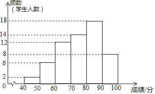

2018年北京市中考数学试题 · 数学解答题 第25题
25．（6.00分）某年级共有300名学生．为了解该年级学生A，B两门课程的学习情况，从中随机抽取60名学生进行测试，获得了他们的成绩（百分制），并对数据（成绩）进行整理、描述和分析．下面给出了部分信息．

a．A课程成绩的频数分布直方图如下（数据分成6组：40≤x＜50，50≤x＜60，60≤x＜70，70≤x＜80，80≤x＜90，90≤x≤100）：
b．A课程成绩在70≤x＜80这一组的是：70 71 71 71 76 76 77 78 78.5 78.5 79 79 79 79.5
c．A，B两门课程成绩的平均数、中位数、众数如下：
课程 | 平均数 | 中位数 | 众数 |
A | 75.8 | m | 84.5 |
B | 72.2 | 70 | 83 |
根据以上信息，回答下列问题：
（1）写出表中m的值；
（2）在此次测试中，某学生的A课程成绩为76分，B课程成绩为71分，这名学生成绩排名更靠前的课程是 （填“A“或“B“），理由是 ，
（3）假设该年级学生都参加此次测试，估计A课程成绩跑过75.8分的人数．